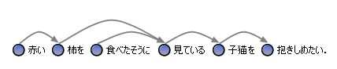
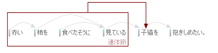
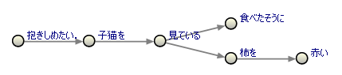
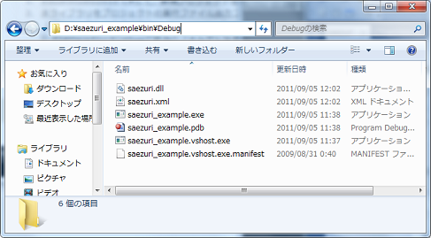
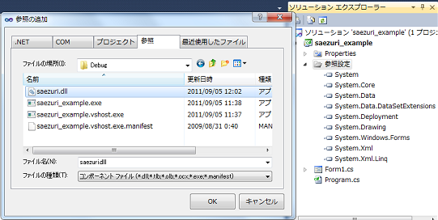

概要
本ライブラリは，既存の形態素解析や係り受け解析ツールをC#から利用するための支援ライブラリです．Tomarigi向けの校正・推敲プラグインを作成する場合にも使用します．
対応している自然言語解析ツールは，以下の通りです．本ライブラリを使用することで，解析結果を得るだけであれば，数行のプログラムで書くことができます．また，解析結果を形態素・文節など，扱いやすい形式に変換します．また，係り受けの可視化も支援します．
- 形態素解析ツール： Mecab v0.98
- 形態素解析ツール： Juman v6.0
- 形態素解析ツール： Yahoo日本語形態素解析 v1
- 係り受け解析ツール： Cabocha 0.60
- 係り受け解析ツール： KNP 3.01
- 係り受け解析ツール：Yahoo日本語係り受け解析 v1
解析ツールの利用支援
各解析ツールは，以下のプロパティ・メソッドを備えています．各ツール用のクラスのコンストラクタを呼び出すと，自動的にAvailableCheck()が呼び出され，staticなプロパティが更新されます．その後は，Analyzeメソッドを呼び出し，解析に成功すると，ResultTextに結果が格納されます．
| static | |
| Enabled | このツールが使用できるかどうか |
| ExePath | ツールの実行ファイルのパス |
| Version | ツールのバージョン情報 |
| AvailableCheck() | ツールが使用可能かのチェック |
| プロパティ | |
| Error | エラー時のメッセージ |
| OriginalSentence | 解析の元の文 |
| ResultText | 解析結果の文字列 |
| メソッド | |
| bool Analyze(string) | 引数に解析対象の文を与える |
CMecabの例
CMecabは，Mecabを使用した解析を行います．
CMecab mecab = new CMecab();
if (mecab.Analyze("赤い柿を食べたそうに見ている子猫を抱きしめたい．") == true)
{
textBox1.Text = mecab.ResultText;
}
CJumanの例
CJumanは，Jumanを使用した解析を行います．
CJuman juman = new CJuman();
if (juman.Analyze("赤い柿を食べたそうに見ている子猫を抱きしめたい．") == true)
{
textBox1.Text = juman.ResultText;
}
CYahooMAの例
CYahooMAは，Yahoo日本語形態素解析サービスを使用した解析を行います．
CYahooMA yma = new CYahooMA("取得済みのアプリケーションIDをここに指定");
if (yma.Analyze("赤い柿を食べたそうに見ている子猫を抱きしめたい．") == true)
{
textBox1.Text = yma.ResultText;
}
CCabochaの例
CCabochaは，Cabochaを使用した解析を行います．
CCabocha cabocha = new CCabocha();
if (cabocha.Analyze("赤い柿を食べたそうに見ている子猫を抱きしめたい．") == true)
{
textBox1.Text = cabocha.ResultText;
}
CKNPの例
CKNPは，KNPを使用した解析を行います．
CKNP knp = new CKNP();
if (knp.Analyze("赤い柿を食べたそうに見ている子猫を抱きしめたい．") == true)
{
textBox1.Text = knp.ResultText;
}
CYahooDAの例
CYahooDAは，Yahoo日本語係り受け解析サービスを使用した解析を行います．
CYahooDA yda = new CYahooDA("取得済みのアプリケーションIDをここに指定");
if (yda.Analyze("赤い柿を食べたそうに見ている子猫を抱きしめたい．") == true)
{
textBox1.Text = yda.ResultText;
}
形態素：CMorpheme
CMorphemeクラスは，形態素を表します．これは，形態素解析ツールの結果から，そのまま取得されます．以下のプロパティを持ちます．
| プロパティ | |
| Text | 表記 |
| Read | ヨミ |
| Basis | 基本形 |
| Pronunciation | 発音(Mecab使用時のみ) |
| Pos,Pos1,Pos2,Pos3 | 品詞，細分類1，細分類2，細分類3 |
| PosString | 品詞，細分類1，細分類2，細分類3をつなげた品詞表記 |
| InflectedForms | 活用形 |
| InflectedType | 活用型 |
| Supplement | 補足情報(Juman使用時のみ) |
| Tag | 汎用 |
| Parent | この形態素を持つ文節 |
| Next | 次の形態素 |
| Prev | 前の形態素 |
| Position | この形態素の文中の位置 |
単語：CWord
CWordクラスは，単語を表します．これは，係り受け解析ツールの結果から，文節ごとに単語情報を切りだして生成されます．ただし，この単語情報は，本ライブラリによって，独自に推定したものです．また，これは，Cabochaを使用した場合のみ，使用することができます．
| プロパティ | |
| Index | 文節番号 |
| MorphemeList | 単語を構成する形態素リスト |
| Text | 単語の表記 |
| Read | 単語のヨミ |
| TextBasis | 単語の基本形 |
| Type | 単語の種別を表すWORDTYPE型 |
| TypeString | Typeの文字表記 |
文節：CSegment
CSegmentクラスは，文節を表します．これは，係り受け解析ツールの結果から，そのまま取得されます．以下のプロパティを持ちます．
| プロパティ | |
| Index | 文節番号 |
| Information | 文節区切り情報(ツール解析結果からの情報) |
| Modify | 係り受け先文節 |
| ModifyIndex | 係り受け先文節の文節番号 |
| ModifiedList | 係り受け元文節リスト |
| ModifiedIndexList | 係り受け元文節の番号リスト |
| ModifyLength | 係り受け先までの文節間数 |
| MorphemeList | 文節を構成する形態素リスト |
| MorphemeFirst | 文節を構成する形態素リストの最初の要素 |
| MorphemeLast | 文節を構成する形態素リストの最後のの要素 |
| WordList | 文節を構成する単語リスト |
| Text | 文節の表記 |
| Read | 文節のヨミ |
| Pronunciation | 文節の発音(Cabocha使用時のみ) |
| PosString | 文節を構成する形態素の品詞の羅列 |
| Tag | 汎用 |
| Next | 次の文節 |
| Prev | 前の文節 |
| Position | この文節の文中の位置 |
文：CSentence
CSentenceクラスは，文を表します．これは，形態素解析ツールや係り受け解析ツールの結果から，そのまま取得されます．解析に使用される文は，前後に空白が含まれていたり，文の途中に改行が含まれていると，それらを除外してから解析されます．したがって，解析に使用された文と，解析時に引き渡された生の文の両方をプロパティに保持しています．以下のプロパティを持ちます．
| プロパティ | |
| ResultText | 形態素/係り受けオリジナル解析結果 |
| Text | 解析に使用された文 |
| TextRaw | 解析に使用された生の文 |
| Read | 文のヨミ |
| Pronunciation | 文の発音(Mecab，Cabocha使用時のみ) |
| SegmentList | 文を構成する文節リスト |
| SegmentFirst | 文を構成する文節リストの最初の要素 |
| SegmentLast | 文を構成する文節リストの最後のの要素 |
| MorphemeList | 文を構成する形態素リスト |
| MorphemeFirst | 文を構成する形態素リストの最初の要素 |
| MorphemeLast | 文を構成する形態素リストの最後のの要素 |
| WordList | 文節を構成する単語リスト |
| Clause | 文を構成する節の親ノード |
| Tree | 文末をルートとした木構造 |
| Tag | 汎用 |
| CheckList | 文を対象とした指摘リスト |
節：CClause
CClauseクラスは，節を表します．これは，係り受け解析ツールの結果から，本ライブラリが独自に推定したものです．CClauseは，ある文節を中心に見た時の節を表します．以下のプロパティを持ちます．
| プロパティ | |
| ContainCount | 節の中にある節の数 |
| Modify | 係り受け先の節 |
| ModifiedList | 係り受け元の節リスト解析に使用された生の文 |
| Type, TypeString | 連体節，副詞節，補足節 |
| ClauseList | 節を構成する節リスト |
| SegmentList | 節を構成する文節リスト |
| ParentSegment | 節の基準となる文節 |
| Text | 節表記(最後の要素のみ形態素) |
| TextModified | 節表記(文節レベル) |
| Tag | 汎用 |
段落：CParagraph
CParagraphクラスは，段落を表します．「段落は，複数の文(CSentence)を保持する」という考え方をしてします．以下のプロパティを持ちます．
| プロパティ | |
| Title | 段落タイトル |
| SentenceList | 構成する文リスト |
| Text | 段落を構成する(解析に使用された)文章 |
| TextRaw | 段落を構成する生の文章 |
| CheckList | 段落を対象とした指摘リスト |
文書：CDocument
CDocumentクラスは，文書を表します．「文書は，複数の段落(CParagraph)を保持する」という考え方をしてします．以下のプロパティを持ちます．
| static | |
| PeriodChar | 句点判定文字リスト(default： ．。！？) |
| ParagraphChar | 段落判定文字列リスト(default： 改行2個，改行+全角空白，改行+半角空白，改行+Tab) |
| BracketsChars1 | 括弧対応チェック文字リスト(全角・半角を同列解釈default：(){}「」) |
| BracketsChars2 | 括弧対応チェック文字リスト(default：『』【】) |
| プロパティ | |
| FileName | 編集中のファイル名 |
| FileNamePath | 編集中のファイル名パス |
| ID | ID用プロパティ |
| Date | 日付用プロパティ |
| Title | タイトル用プロパティ |
| Tag | 汎用 |
| ParagraphList | 段落リスト |
| CheckList | 文書全体を対象とした指摘リスト |
| ExceptedCheckList | 過去の対象外指摘リスト |
| Attribute | この文書の属性情報(CEvaluationGeneral) |
| Text | (解析に使用された)文章 |
| TextRaw | 生の文章 |
| メソッド | |
| List<string> GetALLSentenceTextList() | 文書に含まれる文リスト |
| List<CSentence> GetALLSentenceList() | 文書に含まれる文リスト |
| void ConvertShortEssay(string) | 与えられた文字列を段落および文に分割する |
属性：CEvaluationGeneral
CEvaluationGeneralクラスは，文書のいくつかの属性値を表します．以下のプロパティを持ちます．
| プロパティ | |
| TotalCharCount | 総文字数 |
| TotalCharCountNonSpace | 総文字数（空白等を除いた） |
| ParagraphCount | 段落数 |
| TotalSentenceCount | 総文数 |
| KanjiContentPercentage | 漢字含有率 |
| AverageOfSentenceInParagraph | 段落の平均文数 |
| AverageSentenceLength | 文長平均値 |
| MedianSentenceLength | 文長中央値 |
| MaxSentenceLength | 文長最大値 |
| MinSentenceLength | 文長最小値 |
| TotalMorphemeCount | 形態素数 |
| MorphemeList | 形態素リスト |
| TotalWordCount | 単語リスト数(記号は除く) |
| WordList | 単語リスト(記号は除く) |
| TotalUniqueWordCount | 異なり語数 |
| UniqueWordList | 異なり語リスト |
| FleschReadingEase | Flesch Reading Ease |
| FleschKincaidGradeLevel | Flesch-Kincaid Grade Level |
| VarietyRateVocabulary | Variety Rate of Vocabulary |
| YuleK | ユールK |
可視化：CSentenceView
CSentenceViewは，文の係り受け関係を可視化します．
| static | |
| Bitmap DrawImage(CSentence,Color) | 文と背景色を指定して，画像を生成 |
| プロパティ | |
| Canvas | 描画対象のPanel |
| EnabledDragDrop | ノードのドラッグ＆ドロップ可否 |
| EnabledDragDropMove | Panelのドラッグ＆ドロップ可否 |
| IsLineCurve | 係り受け線を曲線にするか |
| LineColor | 線の色 |
| LineWidth | 線の幅 |
| NodeColor | ノードの色 |
| NodeForeColor | ノードの文字色 |
| NodeSize | ノードのサイズ |
| PreviewSentence | 文節位置操作後の文表記 |
| PreviewVisible | 文節位置操作後の文表示 |
| Sentence | 文表記 |
| Shape | ノードの形状 |
| メソッド | |
| void Draw() | Panelに描画する |
| Bitmap DrawImage(Color) | 背景色を指定して，画像を生成 |
| void Dispose() | 描画後の破棄 |
可視化：CClauseView
CClauseViewは，節を可視化します．
| static | |
| Bitmap DrawImage(CSentence,Color) | 文と背景色を指定して，画像を生成 |
| プロパティ | |
| Canvas | 描画対象のPanel |
| ClauseForeColor | 節の文字色 |
| EnabledDragDropMove | Panelのドラッグ＆ドロップ可否 |
| IsDrawClauseLine | 節の枠の表示を表示するか |
| IsDrawClauseName | 節名の表示を表示するか |
| IsDrawModifyLine | 係り受けを表示するか |
| LineClauseColor | 節の線の色 |
| LineClauseWidth | 節の線の幅 |
| LineColor | 線の色 |
| LineWidth | 線の幅 |
| NodeColor | ノードの色 |
| NodeForeColor | ノードの文字色 |
| NodeSize | ノードのサイズ |
| Sentence | 文表記 |
| メソッド | |
| void Draw() | Panelに描画する |
| Bitmap DrawImage(Color) | 背景色を指定して，画像を生成 |
| void Dispose() | 描画後の破棄 |
可視化：CTreeView
CTreeViewは，文の木構造を可視化します．
| static | |
| Bitmap DrawImage(CSentence,Color) | 文と背景色を指定して，画像を生成 |
| プロパティ | |
| AutoSpace | DepthSpace ，WidthSpaceを 自動的に決定するか |
| Canvas | 描画対象のPanel |
| DepthSpace | 深さサイズ |
| EnabledDragDrop | ノードのドラッグ＆ドロップ可否 |
| EnabledDragDropMove | Panelのドラッグ＆ドロップ可否 |
| NodeSize | ノードのサイズ |
| Orientation | 描画方向 |
| Shape | ノードの形状 |
| Tree | 描画の元になった木 |
| WidthSpace | 幅サイズ |
| メソッド | |
| void Draw() | Panelに描画する |
| Bitmap DrawImage(Color) | 背景色を指定して，画像を生成 |
| void Dispose() | 描画後の破棄 |
string s = "赤い柿を食べたそうに見ている子猫を抱きしめたい．";
CCabocha cabocha = new CCabocha();
if (cabocha.Analyze(s) == true)
{
// 文オブジェクト
CSentence sentence = new CSentence(s);
sentence.ConvertTo(cabocha.ResultText ,TOOL.CABOCHA);
// 係り受け可視化
CSentenceView view1 = new CSentenceView(panel1, sentence);
view1.Draw();
Bitmap bmp1 = CSentenceView.DrawImage(sentence, Color.White);
// 節可視化
CClauseView view2 = new CClauseView(panel2, sentence);
view2.Draw();
Bitmap bmp2 = CClauseView.DrawImage(sentence, Color.White);
// 木構造可視化
CTreeView view3 = new CTreeView(panel3, sentence);
view3.Draw();
Bitmap bmp3 = CTreeView.DrawImage(sentence, Color.White);
}
| 【係り受け可視化】  |
| 【節可視化】  |
| 【木構造可視化】  |
参照設定
saezuriは，プロジェクトの参照設定により読み込みます．また，usingステートメントで名前空間を定義しておくと便利です．以下に利用手順を示します．
- VisualStudio2010 C#にて，新規プロジェクトを作成する．
- 本ライブラリをプロジェクトの実行ファイル出力フォルダにコピーする．
（プロジェクトの作成場所をD:\Sampleにした場合は，
D:\Sample\bin\Debugが該当のフォルダになる）
コピー対象：saezuri.dllおよびsaezuri.xml
※xmlがあると開発時にIntelliSenseで補助説明が出る
 - 参照設定にて，saezuri.dllを読み込む
 - 必要に応じて，usingステートメントを利用する．
using saezuri; using saezuri.NLP; namespace saezuri_example { public partial class Form1 : Form { public Form1() { InitializeComponent(); } } }
サンプルプログラム
using System;
using System.Collections.Generic;
using System.ComponentModel;
using System.Data;
using System.Drawing;
using System.Linq;
using System.Text;
using System.Windows.Forms;
using saezuri;
using saezuri.NLP;
namespace saezuri_example
{
public partial class Form1 : Form
{
CDocument doc = null;
CSentenceView view1 = null;
public Form1()
{
InitializeComponent();
}
private void button1_Click(object sender, EventArgs e)
{
listBox1.Items.Clear();
string txt = textBox1.Text;
// 文書を作成
doc = new CDocument();
doc.ConvertShortEssay(txt);
// 各段落を参照
for (int i = 0; i < doc.ParagraphList.Count; i++)
{
MessageBox.Show("第" + (i + 1) + "段落\r\n\r\n" + doc.ParagraphList[i].Text);
}
// 文書を構成する文の解析と取得
CCabocha cabocha = new CCabocha();
Dictionary<string, string> analyzed = new Dictionary<string, string>();
foreach (string s in doc.GetALLSentenceTextList())
{
string _s = s.Trim(' ', ' ', '\t');
if (cabocha.Analyze(_s) == true)
{
analyzed.Add(_s, cabocha.ResultText);
}
listBox1.Items.Add(_s);
}
doc.SetOverWrite(analyzed);
}
private void listBox1_SelectedIndexChanged(object sender, EventArgs e)
{
if (listBox1.SelectedIndex == -1) return;
List<CSentence> sentences = doc.GetALLSentenceList();
CSentence sentence = sentences[listBox1.SelectedIndex];
StringBuilder sb = new StringBuilder();
foreach (CSegment _seg in sentence.SegmentList)
{
foreach (CMorpheme _mo in _seg.MorphemeList)
{
sb.AppendFormat("{0}({1}) ", _mo.Text, _mo.Pos);
}
sb.Append(" / ");
}
MessageBox.Show(sb.ToString());
if (view1 != null) view1.Dispose();
view1 = new CSentenceView(panel1, sentence);
view1.Draw();
}
}
}